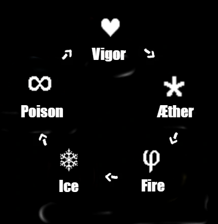
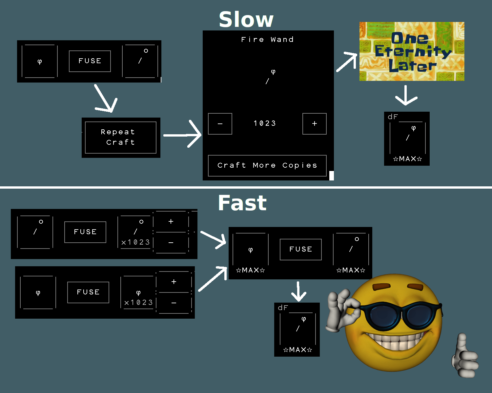
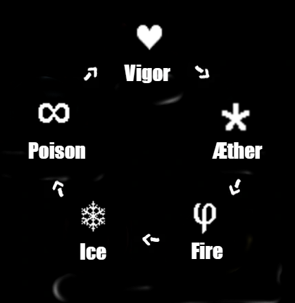
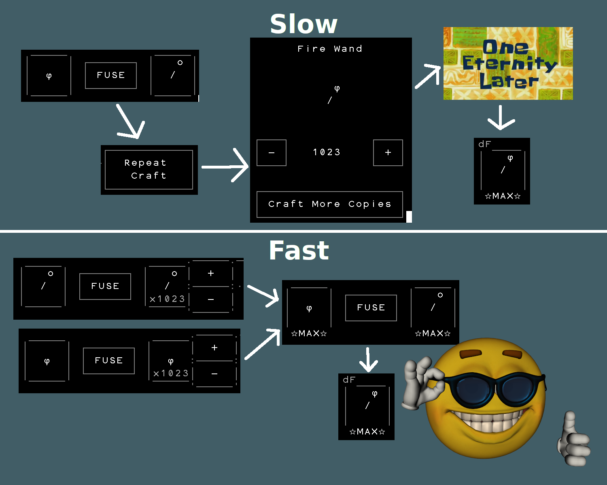

Мой ник в дискорде
utyara228333
utyara228333
Ультимативный гайд по Stone Story
Данный гайд предназначем для того чтобы как можно больше пользователей узнали про все особенности игры, нашли ответ на свой вопрос. Если вы не нашли ответ на свой вопрос, советую вам поискать его на оффициальных сайтах Stone Story:
StoneScript
FAQ
StoneScript
FAQ
·: Часто Задаваемые Вопросы :·
Кара
Что такое кара? Как получить стаки кары? Как нанести урон карой?
Кара - бафф, даваемый при использовании активной способности клинка павшего бога при условви, что заденет врагов. Кара очень сильный, полезный и используемый бафф. Нанести урон карой можно после задевания врагов способностью КПБ( есть фича на использование КПБ на 2 экрана, подробнее в -> Скрипты), вам нужно будет наложить дебафф на врага: заморозка, яд, горение, поджигание(огенный талисман), яд от маски, ослабление брони и т.д.
Кара - бафф, даваемый при использовании активной способности клинка павшего бога при условви, что заденет врагов. Кара очень сильный, полезный и используемый бафф. Нанести урон карой можно после задевания врагов способностью КПБ( есть фича на использование КПБ на 2 экрана, подробнее в -> Скрипты), вам нужно будет наложить дебафф на врага: заморозка, яд, горение, поджигание(огенный талисман), яд от маски, ослабление брони и т.д.
Разбирание
Как разобрать врага?
Разобрать врага - значит уничтожить его пассивной способностью рунных предметов, а именно руны эфира. Руна эфира в определенной форме имеет шанс мгновенного разбора врагов, например меч эфира - dU, т.е. вы делаете один удар и убиваете врага, круто да? Для лучшего результата можете взять не только меч эфира, но и щит эфира, так разобрать врагов становится куда легче, но обратите внимание, что щит эфира разбирает только в том случае, если враг ударил вас.
Разобрать врага - значит уничтожить его пассивной способностью рунных предметов, а именно руны эфира. Руна эфира в определенной форме имеет шанс мгновенного разбора врагов, например меч эфира - dU, т.е. вы делаете один удар и убиваете врага, круто да? Для лучшего результата можете взять не только меч эфира, но и щит эфира, так разобрать врагов становится куда легче, но обратите внимание, что щит эфира разбирает только в том случае, если враг ударил вас.
Награды за событие
Как получить награды за событие, я выполнил все задания, но так ничего и не получил!
Награды за событие выдаются по окончании самого события, так что не беспокойтесь, вы непременно их получите!
Награды за событие выдаются по окончании самого события, так что не беспокойтесь, вы непременно их получите!
Лучшее оружие
Какое оружие в игре самое сильное?
В данной игре нет "самого сильного" оружия, иначе какой смысл был бы от других. У каждого оружия есть свои сильные стороны и недостатки, давайте рассмотрим их:
Маленькие мечи: имеют самый высокий ДПС(урон в секунду) по одиночной цели в игре.
Большие мечи: имеют не такой высокий ДПС, но обладают шансом сплэш-урона(урона по области).
Жезлы: имеют большое расстояние атаки, также обладают хорошим(на 10* 100%) шансом сплэш-урона.
Бердыш: имеет хороший, но недостающий до мечей урон, но обладающий сильной активной способностью - точечным ударом, который наносит очень большой урон.
Щиты: могут давать шанс уклонения, накапливать броню.
В данной игре нет "самого сильного" оружия, иначе какой смысл был бы от других. У каждого оружия есть свои сильные стороны и недостатки, давайте рассмотрим их:
Маленькие мечи: имеют самый высокий ДПС(урон в секунду) по одиночной цели в игре.
Большие мечи: имеют не такой высокий ДПС, но обладают шансом сплэш-урона(урона по области).
Жезлы: имеют большое расстояние атаки, также обладают хорошим(на 10* 100%) шансом сплэш-урона.
Бердыш: имеет хороший, но недостающий до мечей урон, но обладающий сильной активной способностью - точечным ударом, который наносит очень большой урон.
Щиты: могут давать шанс уклонения, накапливать броню.
Руны и модификации оружия
Руны в этой игре - неотъемлемая часть геймплея, и очень важно учитывать какую руну брать против какого врага. Поговорим сначала о них. Враги на всех локациях(кроме 2-ух) элементальные, это значит что они имеют слабость против другого элемента, вот последовательность
рун:
Яд > Сила > Эфир > Огонь > Лёд > Яд
То есть, если мы сражаемся против врага с элементом огонь, нам лучше всего брать оружия с руной эфира и т.д. Но как понять какой враг? Вы можете воспользоваться камнем провидца, чтобы увидеть какого элемента враг, или воспользоваться этой шпаргалкой:
Пещеры страха - яд
Грибной лес - сила
Призрачные залы - эфир
Бурлящая шахта - огонь
Ледяной хребет - лёд
Храм - яд
А где же в этом списке Каньон дедвуд и Каменистое плато? Дело в том, что на этой локации враги не подходят под описание выше.
Каньон дедвуд - враги на этой локации не имеют руны, поэтому не имеют слабости к рунам.
Каменистое плато - Акропольский разведчик не имеет руны, а Дисангелос имеет сразу все виды рун(во 2 стадии).
Яд > Сила > Эфир > Огонь > Лёд > Яд
То есть, если мы сражаемся против врага с элементом огонь, нам лучше всего брать оружия с руной эфира и т.д. Но как понять какой враг? Вы можете воспользоваться камнем провидца, чтобы увидеть какого элемента враг, или воспользоваться этой шпаргалкой:
Пещеры страха - яд
Грибной лес - сила
Призрачные залы - эфир
Бурлящая шахта - огонь
Ледяной хребет - лёд
Храм - яд
А где же в этом списке Каньон дедвуд и Каменистое плато? Дело в том, что на этой локации враги не подходят под описание выше.
Каньон дедвуд - враги на этой локации не имеют руны, поэтому не имеют слабости к рунам.
Каменистое плато - Акропольский разведчик не имеет руны, а Дисангелос имеет сразу все виды рун(во 2 стадии).
Максимальности
Максимальный уровень персонажа - 60
Максимальное хп персонажа - 80
Максимальный уровень оружия - 10*
Максимальное зачарование оружия - +21
Максимальное количество сундуков в инвентаре - 400
Максимальное хп персонажа - 80
Максимальный уровень оружия - 10*
Максимальное зачарование оружия - +21
Максимальное количество сундуков в инвентаре - 400
Книга рецептов
Меч + Щит = Молот
Меч + Арбалет = Тяжелый Арбалет
Меч + Квотерстафф = Большой Меч
Меч + Рунный Жезл = Рунный Меч
Щит + Рунный Жезл = Рунный Щит
Щит + Большой Меч = Бердыш
Щит + Арбалет = Стремительный Щит
Щит + Стремительный Щит = Композитный Щит
Молот + Рунный Жезл = Рунный Молот
Молот + Квотерстафф = Тяжелый Молот
Большой меч + Рунный жезл = Большой Рунный Меч
Квотерстафф + Рунный Жезл = Рунный Посох
Тяжелый Арбалет + Арбалет = Повторяющийся Арбалет
Тяжелый Арбалет + Рунный Жезл = Тяжелый Рунный Арбалет
Меч + Арбалет = Тяжелый Арбалет
Меч + Квотерстафф = Большой Меч
Меч + Рунный Жезл = Рунный Меч
Щит + Рунный Жезл = Рунный Щит
Щит + Большой Меч = Бердыш
Щит + Арбалет = Стремительный Щит
Щит + Стремительный Щит = Композитный Щит
Молот + Рунный Жезл = Рунный Молот
Молот + Квотерстафф = Тяжелый Молот
Большой меч + Рунный жезл = Большой Рунный Меч
Квотерстафф + Рунный Жезл = Рунный Посох
Тяжелый Арбалет + Арбалет = Повторяющийся Арбалет
Тяжелый Арбалет + Рунный Жезл = Тяжелый Рунный Арбалет
А на что мне зачаровать оружие?
Допустим ты выбираешь, на что зачаровать свой маленький рунный меч яда +21, чтобы было максимально много урона, но переброс стоит кучу денег, и пока будешь сравнивать - разоришься. Или хочешь примерно прикинуть на какое оружие лучше поменять свое текущее?
На помощь придет Item Factory.
Item Factory - очень крутой эксель файл, который содержит данные обо всех оружиях, их зачарованиях, уроном с зельями, ПАА, зачарования, прокачка, в общем крутая шутка (его делал не я).
Item Factory
Item Factory - очень крутой эксель файл, который содержит данные обо всех оружиях, их зачарованиях, уроном с зельями, ПАА, зачарования, прокачка, в общем крутая шутка (его делал не я).
Item Factory
Пермапот
Бесконечное зелье очень непростой трюк, для которого вам понадобиться иметь крутое снаряжение. Для этого вам понадобиться маска культиста с зачарованием на +21 на секретное свойство продления самых старых баффов, предпочитаемое зелье и сильное оружие.
Инструкция по использованию:
- В начале локации используйте предпочитаемое зелье, и возьмите в руки маску культиста
- Пройдите всю локацию и босса с маской в руках
- Подберите сундук после убийства босса
- Активируйте зелье сразу после подбора сундука
- Вы снова начинаете локацию, активируйте зелье
- Вуаля, у вас зелье, которое действует очень долго.
Объяснение почему это так работает:
Маска культиста каждый кадр продлевает действие вашего баффа, и увеличивает максимальное действие зелья на столько, сколько маска кадров была в руках. Так, постоянно держа маску и активации зелья много раз, вы имеете очень долгое время работы зелья.ПРИМЕЧАНИЕ:
Зачарование маски обязательно должно быть +21. У вас ничего не получится если зелье закончится во время прохождения.·:: Скрипты ::·
ПАА (вставить в начало скрипта)
ПАА - пропуск анимации атаки, на английском - AAC (atack animation cancel) Данный код позволяет пропускать кадры анимации атаки и бить намного быстрее, что позволяет увеличить ваш урон в секунду.
func isEquippedTwoHanded()
return !item.left
func CheckForAAC()
?!ai.enabled
return
var isTwoHanded = isEquippedTwoHanded()
var leftItem = item.left
var rightItem = item.right
?item.right.state = 3
equipR shield *0 +0
?item.left.state = 3
equipL wand *0 +0
?isTwoHanded
?rightItem
equip @rightItem@
:?leftItem
equip @leftItem@
:
?rightItem
equipR @rightItem@
?leftItem
equipL @leftItem@
CheckForAAC()Использование стремительного щита, таранного щита и квотерстаффа
Перемещение с помощью квотерстаффа позволяет немного ускорить прохождение за счет его активной способности, мелочь, а приятно и в прохождениях на время играет не мало важную роль. Стремительный щит позволяет быстро переместиться к врагу и не тратить время
на то чтобы подойти к нему. Таранный щит альтернатива стремительному щиту, но позволяет оглушать врага и получать броню за каждого оглушенного врага, поэтому чем больше тем лучше.
?item.GetCooldown(＂bash＂) <= 0
?item.GetCooldown(＂dash＂) >= 0
?foe ! boss
equipR bashing shield
equipL triskelion
:?foe = boss & foe ! Poena
equipR bashing shield
equipL triskelion
:?foe.count >= 3
equipR bashing shield
equipL triskelion
:?item.GetCooldown(＂dash＂) <= 0
equipR dashing shield +0
equipL triskelion
:?item.GetCooldown(＂dash＂) <= 0
equipR dashing shield +0
equipL triskelion
?item.GetCooldown(＂quarterstaff＂) <= 0
equip quarterstaff
activate r
Использование Клинка Павшего Бога на 2 экрана.
Клинок Павшего Бога при активации, если убивает врага своей активной способностью дает стаки кары, которая позволяет наносить дополнительный магический урон при наложении дебаффа на врага, чем больше убито врагов, тем больше стаков кары, тем больше урона,
данный скрипт перемещает экран вперед, что позволяет задеть активной способностью не только врагов которые на экране вместе с вашим персонажем, а и на следущем.
var delay = 20
?item.GetCooldown("blade") <=0 &
^foe.count > 5 &
^foe.distance < 30
screen.next()
delay--
?delay=0
equip blade
activate r
screen.ResetOffset()
delay = 20Использование Бердыша.
Бердыш имеет сильную активную способность, позволяющую наносить большой моментальный урон, но просто активировать его не получится, из за того что нанесение урона активной способностью имеет долгую анимацию, из за чего приходится дописывать дополнительные
условия, до которых многие пользователи могли не додуматься.
?item.GetCooldown("bardiche")=0 |
^item.GetCooldown("bardiche")>870
equip bardiche
activate rНакладывание Дебаффов.
Накладывание дебаффов на врагов очень может поспособствовать прохождению локации, из за того что враг будет медленнее бить, будет наносить меньше урона и будет подожжён, лучше всего использовать на боссах. Вместо оружий что в этом коде можете использовать
свои, например взять в левую руку еще оружие, или вместо дебаффающих мечей дебаффающие жезлы и т.д., также хорошим вариантом взятьв левую руку другое дебаффающее оружие, чтобы процесс
наложения дебаффов немнго ускорился.
?foe.debuffs.string ! "chill:6"
equipR ice sword dI
:?foe.debuffs.string ! "damage"
equipR poison sword dP
:?foe.debuffs.string ! "dot"
equipR fire sword dFИспользование зелья
Использование зелий при прохождении может дать огромное преимущество перед прохождением без зелья. Это очень полезная и всеми используемая механика игры. Так, в коде использовать зелье можно следующим способом, но учтите, что лучше всего, когда для активации
зелья есть условие, например дистанция до врага.
?foe.distance < 10
activate potionРунные щиты
Рунный щит с зачарованием А имеет очень сильную особенность, он дает щит за каждого врага в зоне действия, важно использовать на конкретного врага конкретный щит, потому что будет у вас дополнительная броня или нет зависит от того на какого врага(рунный
элемент врага) вы возьмете какой щит. Иначе если у врага нет руны (например Огромный Комар), то экипируется щит льда ai, который будет накладывать дебафф заморозку на врагов.
?foe = poison
equipR ice shield A
:?foe = vigor
equipR poison shield A
:?foe = aether
equipR vigor shield A
:?foe = fire
equipR aether shield A
:?foe = ice
equipR fire shield A
:
equipR ice shield ai
equipL triskelionМундиал
Для данной фичи вам понадобятся 2 меча с зачарованием +21 на скорость атаки. В чем заключается суть:
Лунный камень увеличивает скорость атаки, и при помощи экипировки оружий покадрово и быстрой скорости
атаки за счет зачарования мы начинаем бить как пулемет,
но нам понадобиться вот такой код:
var moondialTimer = 0
moondialTimer++
?moondialTimer % 3 = 1
equipL moon
equipR "ваш_меч1"
:?moondialTimer % 3 = 2
equipL moon
equipR "ваш_меч2"
:
equipL "ваш_меч2"
equipR "ваш_меч1"Уклонение от атаки босса
В игре с помощью камня разума можно уклониться от некоторых сильных атак босса,
тем самым не получив урона. Сделать это можно при помощи
Затем посмотрите на каком состоянии и на каком времени босс производит атаку. Пропишите условие:
Почему я не пропишу сам, на каком времени и состоянии уклониться? Ответ прост: потому что код может не сработать в вашей ситуации, например, если вы наложили на врага дебафф заморозки, то время значительно будет отличаться, а соответственно код тоже, поэтому тут можно сказать все индивидуально.
Но есть и боссы, которые атакуют не по определенному состоянию и времени, я нашел всего 2: Пуфф и вагонетка с бомбой, это мини боссы, которые разблокируются на желтых звездах уровней. Данные враги атакуют в зависимости расстояния до игрока, и поэтому можно написать универсальный код:
foe.statefoe.time>`0,0,Time @foe.time@
>`0,1,State @foe.state@Затем посмотрите на каком состоянии и на каком времени босс производит атаку. Пропишите условие:
?foe.state = (состояние на котором босс делает атаку) &
^foe.time = (время на котором босс делает атаку)
equipR mind stoneПочему я не пропишу сам, на каком времени и состоянии уклониться? Ответ прост: потому что код может не сработать в вашей ситуации, например, если вы наложили на врага дебафф заморозки, то время значительно будет отличаться, а соответственно код тоже, поэтому тут можно сказать все индивидуально.
Но есть и боссы, которые атакуют не по определенному состоянию и времени, я нашел всего 2: Пуфф и вагонетка с бомбой, это мини боссы, которые разблокируются на желтых звездах уровней. Данные враги атакуют в зависимости расстояния до игрока, и поэтому можно написать универсальный код:
Пуфф
?foe.distance <= 4
equip mind stoneВагонетка с бомбой
?foe = bomb cart
?foe.distance = 12
equipR dashing shield
equipL triskelion
:?foe.distance < 10
equipR mind stoneТалисманы
Талисманы - весьма полезная вещь, которую я советую всегда использовать при прохождении локации. Они могут очень сильно помочь при прохождении локации, ускорить время на ней. Но призыв
может показаться сложной вещью, т.к. имеет долгую анимацию, вот как я реализовал призыв талисмана (вставить в начало локации, чтобы другие условия не сбивали анимацию, также помменять
на тот талисман который вам нужен):
?foe.distance > 20 &
^totaltime > 50 &
^summon.count = 0
equipR fire talisman
equipL triskelion
activate r·:: Локации ::·
Общие рекомендации по прохождению локаций
Данные рекомендации подойдут для всех локаций, а если не для всех, то это будет указано. Эти советы очень
ускорят ваше прохождение, если вы все правильно организуете в коде, потому что вся игра строиться вокруг кода,
проходить вручную - такое себе.
На большом расстоянии от врага используйте Композитный щит
Композитный щит может накапливать в себе очень много брони, что позволит вам впитать больше урона не трогая хп.На среднем расстоянии используйте рунный щит
Рунный щит для правильных элементальных врагов может дать колоссально много брони, особенно если на локации очень много врагов, доходит даже до 80 брони!На протяжении среднего и большого расстояния испоьзуйте Квотерстафф
Казалось бы, квотерстафф просто палка, но нет, это лучший друг любого спидраннера, т.к. позволяет быстрее передвигаться по локации за счет активной способности - мини-рывок. Мелочь, а очень решает.Используйте трискелион и звездный камень
Это очень недооцененные предметы, про которые новички зачастую даже и не знают, но они очень помогают ускорить прохождение локации. Можете взять их в левую руку, например когда используете композитный щит или рунныйОгненный талисман
Также если прохождение локации у вас длится очень долго, то советую использовать огенный талисман, т.к. это неплохой пассивный урон, хоть какой то. Это поможет вам уменьшить время на прохождение локации.Если дистанция чуть меньше средней - таранный и стремительные щиты
Используйте таранный щит(если не на перезарядке) или стремительный щит(тоже если не на перезарядке), я даже и не знал что у стремительного щита есть перезарядка, а оказывается есть. Советую использовать эти 2 щита если: вас ударят но вы сможете впитать урон щитом, который ранее накопили по моим советам, так же если вы успеете убить врага до того как он нанесет вам уронЕсли дистанция близкая - время вашего наисильнейшего оружия
Если вы сблизились с врагом с помощью телепортирующих щитов, то врага нужно убивать, если вы этого сделать не сможете, то лучше работать на дистанции, а когда у него останется мало здоровья телепортироваться к нему. Если вы уже более продвинутый игрок, то советую накладывать дебаффы на боссов, такие как заморозка, горение, уменьшение урона. Это позволит вам получить как можно меньше урона от босса.Уворот от атак боссов
Вы можете избежать некоторых атак боссов с помощью камня разума, а именно: когда вы берете его в руки, то он автоматически телепортирует вас назад, тем самым враг по вам не сможет попасть. Работает это не везде, вот некоторые примеры атак от которых можно уклониться:- Удар Гриба на 1 стадии
- Супер-Лазер Дисангелоса на 3 стадии
- Камень который сбрасывает в Храме Нагараджа
- Удар Пэны(если вы на далеком расстоянии от нее)
- Удар корнями Ксилоалгии
- Удар Палласа на 1 стадии
- Оглушающий щит Дисангелоса
Используйте Зелья
Не жалейте свои ресурсы, чем быстрее вы пройдете локацию, тем меньше времени у вас будет уходить на фарм, тем быстрее вы расфармитесь до нужных вам предметов. Зелья в данной игре дают огромное преимущество, не упускайте шанс им воспользоваться. Рекомендуемые зелья: Удача и Берсерк. Также зелья помогут вам пройти какую нибудь бесячую локацию, например, вы не можете пройти Нагараджу потому что он вас съедает? Выпейте зелье очищения, чтобы сбросить негативные эффекты.Используйте Потерянные предметы
Потерянные предметы в бою очень полезны, особенно огненный талисман и клинок павшего бога. Клинком павшего бога вы можете быстро убить монстров для того чтобы бежать локацию дальше, а с огненным талисманом вы нанесете боссу неплохой урон, особенно если битва идет долго.Используйте маску культиста
Маска культиста очень силный предмет при прохождении и очень может вам помочь если вы получаете много урона от босса, и из за этого например не можете пройти его, или у вас остается мало хп и при оффлайн фарме вы умираете. Это все можно решить активной способностью маски, которая накладывает дебафф уменьшения урона, причем очень сильный, вроде мелочь, а вся такая игра и строится на таких мелочах. Также хорошо комбинируется с карой, нанося урон от кары. И не стоит забывать, что маска при всем при этом увеличивает продолжительность дебаффов, накладываемых на врага, так что очень рекомендую в использовании.Суммируя эти факты, прохождение локаций можно записать с помощью кода так:
?loc = ***ваша локация***
var delay = 20
?foe.distance < 30 &
^item.GetCooldown(＂blade＂) <=0 &
^foe.count > 5
screen.next()
delay--
?delay=0
equip blade
activate r
screen.ResetOffset()
delay = 20
:?pickup.distance <= 5
equipR star stone
equipL triskelion
// огенный талисман
:?foe.distance > 20 &
^totaltime > 50 &
^summon.count = 0
equipR fire talisman
equipL triskelion
activate r
:?foe.distance > 20
?item.GetCooldown(＂quarterstaff＂) <= 0
equip quarterstaff
activate r
equipR compound shield
equipL triskelion
// рунный щит
:?foe.distance < 20 & foe.distance >= 15
?foe = poison
equipR ice shield A
:?foe = vigor
equipR poison shield A
:?foe = aether
equipR vigor shield A
:?foe = fire
equipR aether shield A
:?foe = ice
equipR fire shield A
:
equipR ice shield ai
equipL triskelion
// стремительный щит
:?foe.distance < 15 & foe.distance >=13
?item.GetCooldown(＂bash＂) <= 0
?item.GetCooldown(＂dash＂) >= 0
?foe ! boss
equipR bashing shield
equipL triskelion
:?foe = boss & foe ! Poena
equipR bashing shield
equipL triskelion
:?foe.count >= 3
equipR bashing shield
equipL triskelion
:?item.GetCooldown(＂dash＂) <= 0
equipR dashing shield +0
equipL triskelion
:?item.GetCooldown(＂dash＂) <= 0
equipR dashing shield +0
equipL triskelion
?item.GetCooldown(＂quarterstaff＂) <= 0
equip quarterstaff
activate r
// близкая к врагу дистанция
:?foe.distance < 13
// оружия для основных врагов
?foe ! boss
// уклонение от атаки или дебафф с маски
?foe.state = ** & foe.time = **
//equipR mind
//equipR mask
//activate r
***экипируйте свое оружие***
// оружия для босса
?foe = boss
//накладывание дебаффов
?foe.debuffs.string ! ＂chill:6＂
equipR ice sword dI
:?foe.debuffs.string ! ＂damage＂
equipR poison sword dP
:?foe.debuffs.string ! ＂dot＂
equipR fire sword dF
:?item.GetCooldown("bardiche") <= 0 |
^item.GetCooldown("bardiche") > 870
equip bardiche
activate r
:
***экипируйте свое оружие***
ПРИМЕЧАНИЕ: замените строки в коде на свои оружия, если вы предпоччитаете не уклоняться
от атаки врага, то уберите проверку ?foe.state & foe.time
Более детальные советы к каждой локации
Каменистое плато
Данная локация очень хороша для фарма зачарований, т.к. в ней выпадает очень много дельта сундуков. Очень рекомендую использовать композитный щит для доп защиты.
При возможности неплохо было бы пройти локацию с пермапотом и мундиалом, но данная тактика требует очень прокачанных оружий: маска культиста +21, 2 желательно огненных меча
+ 21 на скорость атаки, а также оружие чтобы пройти босса с маской в руках.
Акропольский разведчик
Наложить дебаффы(обязательно) и убить самым сильным вашим оружием, т.к. у него нет слабостей для каких либо рун.Дисангелос
У данного врага есть 3 стадии, и ударить его можно даже когда он еще в облике человека, использовав квотерстафф и стремительный (или таранный) щит и ударить активной способностью бердыша, перед этим предаврительно использовав активную способность тяжелого молота. Я сам этим не пользовался, но видел как это делают и работает это примерно так. Рассмотрим его стадии.1 стадия
Наложить дебаффы и постараться убить до того как он совершит супер атаку из глаза от которой нельзя уклониться. Если же у вас не получилось это сделать, то наложите дебафф с помощью маски культиста(если она у вас имеется) перед его супер атакой глазом, чтобы получить меньше урона. Определенных оружий нет, из за отсутствия слабостей к рунам.2 стадия
Наложить дебаффы, но слишком долго этого делать не стоит, т.к. он тоже накладывает дебаффы в зависимости от руны в его глазу, но если вы нанесете достаточно урона, то он их не наложит, но брать элементальные мечи нужно для определенных рун босса, например если в глазу у босса руна льда, то надо взять меч огня и т.д.3 стадия
По старой схеме накладываем дебаффы, если не использовали маску культиста используем, т.к. урона его атака сносит прилично. Брать мечи огня, т.к. имеет к ним слабость. Также выставляет щит, который оглушает, и, если вы пользуетесь пермапотом то он вам его собьет, так что следует уклонится от щита в любом случае. Сделать это можно при помощиfoe.timefoe.stateКаньон дедвуд
На данной локации можно уклониться от атак Пэны и Ксилоалгии с помощью камня разума. Т.к. враги на этой локации не элементальные, то берите свое самое сильное оружие, но прошу обратить внимание, что против Каменных скарабеев не работают арбалеты и жезлы.
Я бы посоветовал взять бердыш с зачарованием на скорость атаки, или аналогично Тяжелый молот, тоже на скорость атаки.
Прохождение Пэны вариативно:
Прохождение Пэны вариативно:
- 1) Проходить арбалетом и уклоняться от ее атаки, но уклониться вы сможете только 1 раз, на 2 удар у камня разума будет перезарядка
- 2) Пока она отвернута телепортироваться к ней, бить ее(не накладывая дебаффы), когда она повернеться то нужно держать ее в вечном стане, это достигается путем экипирования 2 рунных молтов, пока она оглушена вы можете наложить на нее дебаффы и бить оружием
foe.buffs.string?foe.buffs.string ! "mirror"
...она отвернута, выполняйте код...
:
...она повернулась, действуйте!...
Обучение Stone Script
Вводная информация
Данное обучение подойдет как и новичку который первый раз услышал про программирование, так и опытному программисту на StoneScript, может он узнает тут что то новое. Весь гайд основывается на моих личных знаниях и в процессе написания гайдов я тоже многому учусь. Этот гайд будет рассмотрен не только как гайд именно по StoneScript, а именно про программирование в целом, вы поймете как оно устроено и будете иметь представление как впринципе пишется код. Мне не хотелось бы такой банальщины как например: ну, чтобы в игре дистанцию узнать нужно сделать вот так туда сюда нажать то написать и вот, нет, я сначала расскажу про концептуальные основы программирования, а затем уже интегрировать это в StoneScript. StoneScript сам по себе схож со многими языками программирования, поэтому, если вы научитесь на нем программировать, перейти на почти любой другой язык для вас не составит проблемы (конечно немного изменится синтаксис, но суть остается та же). Казалось бы, просто игра, но в ней столько всего...Программирование по сути - объяснение компьютеру чего вы хотите. Сам компьютер воспринимает информацию в виде единиц и нулей, 1 и 0. Чтобы проще понять это, можно провести аналогию: Представьте, что вы работаете на иностранную компанию, к вам подходит сам директор и начинает говорить что делать, но вы ничего не понимаете. Приходит специальный переводчик, переводит вам то что он сказал, и вы это выполняете. Программирование, грубо говоря, устроено так же. Вы записываете команды, которые компьютер должен выполнить, затем когда вы запускаете код, специальная программа "компилятор" переводит ваш код в 1 и 0, чтобы компьютер понял что вы от него хотите. После того как код скомпилируется компьютер выполняет указанные действия.
Переменные
Переменные, объясняя простым языком - коробочка с данными. Представьте себе что у вас есть коробка, вы ее подписываете определенным названием и кладете туда что то. Также и в программировании: подписанная коробка - это именованная переменная с какими либо данными. В процессе работы кода вы можете изменять значение переменной (вытаскивать и засовывать в
коробку что то другое), но вы не можете изменять ее название (вы подписали переменную перманентным маркером), вы можете создать новую переменную с другим именем (новую коробку) и
присвоить ей желаемое имя (подписать ее). Имя у переменной может быть любым, каким захотите, но не может содержать специальных символов (таких как пробел +* и т.д., но можно _) и не
должно начинаться с цифры или состоять только из нее. Советую называть переменную именно тем, для чего она предназначена, например если переменная
это дата вашего дня рождения, то лучше ее назвать myBirthdayDate. Также переменная не должна быть зарезервированным именем, все равно чтобы родители при вашем рождении дали вам не имя, а просто назвали вас ребенок.
Это очень грубая аналогия, но думаю суть вы уловили. Зарезервированные имена - var, func, import и т.д. Также есть разные способы наименования переменных, но я советую вам пользоваться
способом camelCase. camelCase - это когда если в переменной содержится несколько слов, то вы пишете их не через _ а с помощью объединения двух слов, но последущее начинается с буквы
верхнего регистра, например: my_name - myName, it_just_variable_for_my_code - itJustVariableForMyCode.
В StoneScript переменные создаются при помощи ключевого слова
Таким образом перейдем к StoneScript.
В StoneScript переменные создаются при помощи ключевого слова
varТаким образом перейдем к StoneScript.
var num = 100
var name = "Анатолий"
var lastName = "Басурман"Другое
Для того чтобы оружие стало радужным необходимо 16+ зачарование и выше
Если хотите получить рунный предмет с рунным свойством, то сначала чаруйте руну а потом сам предмет, например скрафтить рунный меч яда:
руна яда + жезл камня = жезл яда ->dP <-
жезл яда + меч = меч яда dP
жезл камня + руна яда = жезл яда ->D <-  
Если хотите получить рунный предмет с рунным свойством, то сначала чаруйте руну а потом сам предмет, например скрафтить рунный меч яда:
руна яда + жезл камня = жезл яда ->dP <-
жезл яда + меч = меч яда dP
жезл камня + руна яда = жезл яда ->D <-  